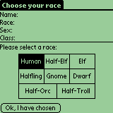
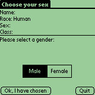
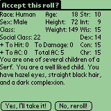
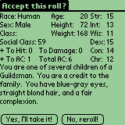
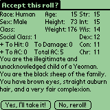
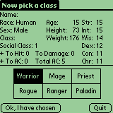
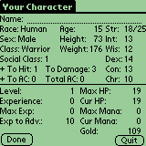
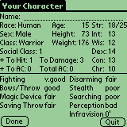
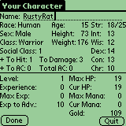

kMoria character generation
pretty straightforward really
pretty straightforward really

The first step is to select your.. er.. species, I suppose. You have a choice of human, half-elf, elf, halfling, gnome, dwarf, half-orc, and half-troll.
Your species determines the professions to which you may be admitted and influences your general appearance, abilities, and physical characteristics.

Next you must select a gender (fear not, this will only affect your character's height and weight, and perhaps your own state of mind). Your choices are the traditional male and female.
(You can also tap Quit to return to the first screen.)

kMoria will roll a bunch of imaginary dice and present you with this rather cluttered screen.
At the top of the screen, you can now see your social class; age, height, and weight; stats; attack/defense modifiers and base armor class. You will chiefly be interested in the stats.
At the bottom of the screen, you can see a brief description of your character.
You may either keep this set of numbers, or re-roll in the hopes of higher stats (or a more amusing description).



At the top of the screen you see the numbers which you have just confirmed. At the bottom you have a choice of career; your character class, when chosen, will modify your stats slightly and will determine your initial ability in a set of skills which you can see in the next screen.
Depending on your species, you can select from some or all of: warrior, mage, priest, rogue, ranger, paladin.
(You can also tap Quit to return to the first screen.)

At the top of the screen you see the set of numbers from the previous screen, slightly modified by your choice of profession.
At the bottom of the screen, you see some additional information. Tap in this area to switch between your vital statistics and your skills.

Skills each have a value in this range: very bad, bad, poor, fair, good, very good, excellent, and superb.
Your vital statistics include information that will be visible in the status bar during game play, in addition to: the amount of experience required to reach the next level, and your maximum mana points.
(You can also tap Quit to return to the first screen.)

On the top part of the screen, you may notice that you can give your character a name. (If you do not, your PalmOS user name will be used by default. I know you can be more creative than that.)
The creation process is complete as soon as you tap Done. Go find out how to play...
(You can also tap Quit to throw away this character and return to the first screen.)